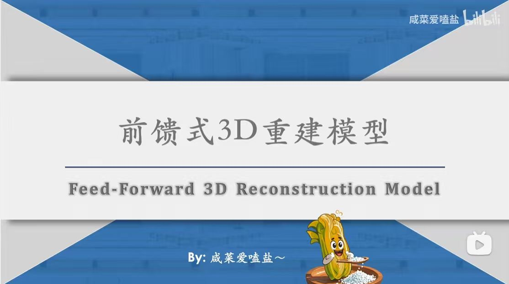

Topic: Introduction to Feed-Forward 3D Reconstruction Models.
Description: This slide introduces a technical presentation on "Feed-Forward 3D Reconstruction Models." This approach in computer vision enables generating 3D structures from 2D inputs in a single pass, bypassing traditional iterative optimization techniques to significantly improve efficiency.
Source: Presentation by Bilibili creator "咸菜爱嗑盐～".